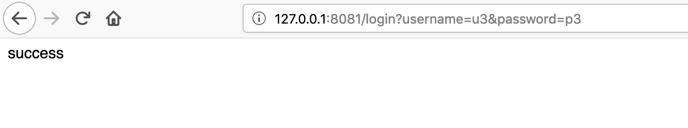
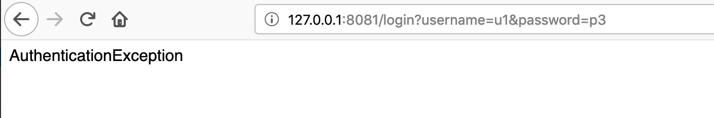
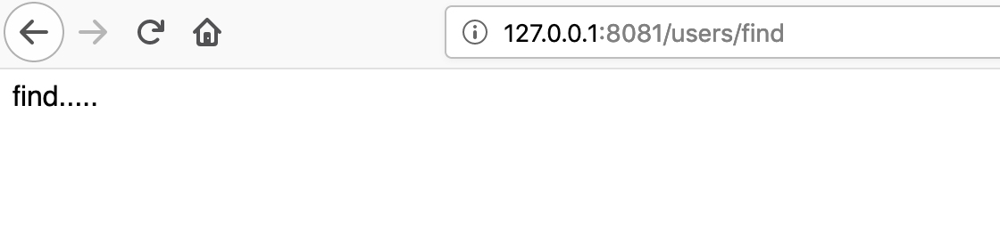
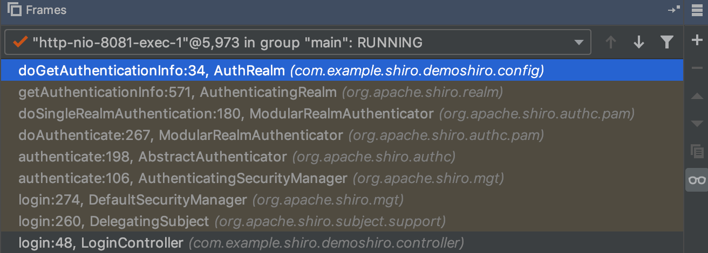
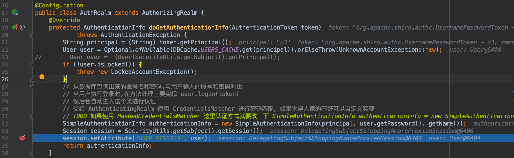
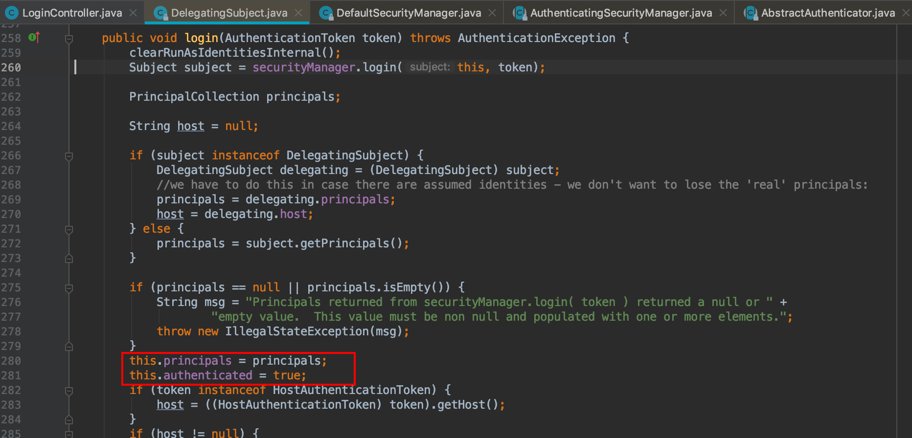

Java安全开发小tricks总结
ReDOS
所谓的 ReDOS(Regular expression Denial of Service) 正则表达式拒绝服务攻击 。实际上开发人员使用了正则表达式来对用户输入的数据进行有效性校验, 当编写校验的正则表达式存在缺陷或者不严谨时, 攻击者可以构造特殊的字符串来大量消耗服务器的系统资源，造成服务器的服务中断或停止。
现在大多项目都会用到regex正则来匹配、识别字符串中特定的字符，但是对于正则表达式的使用一般开发都直接google搜索现有的正则表达式又或是基于简单实现需求的方式编写正则表达式，因为不严谨容易造成ReDos。
出现ReDOS的样例正则表达式
1 | 1. (a+)+ |
Payload: “aaaaaaaaaaaaaaaaaaB”
这里列举一下实际业务场景中会用到的缺陷正则（摘自L1NK3R）
Person Name **^[a-zA-Z]+(([\'\,\.\-][a-zA-Z ])?[a-zA-Z]\*)\*$**
Java Classname **^(([a-z])+.)+[A-Z]([a-z])+$**
Email Validation **^([0-9a-zA-Z]([-.\w]\*[0-9a-zA-Z])\*@(([0-9a-zA-Z])+([-\w]\*[0-9a-zA-Z])\*\.)+[a-zA-Z]{2,9})$**
Multiple Email address validation **^[a-zA-Z]+(([\'\,\.\-][a-zA-Z ])?[a-zA-Z]\*)\*\s+<(\w[-._\w]\*\w@\w[-._\w]\*\w\.\w{2,3})>$|^(\w[-._\w]\*\w@\w[-._\w]\*\w\.\w{2,3})$**
Decimal validator **^\d\*[0-9](|.\d\*[0-9]|)\*$** payload：1111111111111111111111111!
Pattern Matcher **^([a-z0-9]+([\-a-z0-9]\*[a-z0-9]+)?\.){0,}([a-z0-9]+([\-a-z0-9]\*[a-z0-9]+)?){1,63}(\.[a-z0-9]{2,7})+$**
除了Decimal外 *Payload均为 * aaaaaaaaaaaaaaaaaaaaaaaaaaaa!
精度的丢失
精度问题
先看这个例子
1 | double result = 2.0 - 1.9; |
稍微有开发经验的人都看出来这里的result不会等于0.1，这里返回0.10000000000000009
无论是float还是double都是浮点型数值， 浮点数在Java中是无法精确表示的，因为大部分浮点数转换成二进制是一个无限不循环的小数，只能通过保留精度的方式进行近似表示。虽然这个问题看上去显得无足轻重，但是要是在支付业务上却是一个特别隐匿的bug。
在实际的订单交易过程中，出现这个问题的更多场景是金额单位元与分的转换。银行给你的单位是元，你自己的运算是分；前端输入是元，计算是分等等。
举个例子：用户下了一笔64.6元的订单，你在需要转换成分。如果直接除以100，你会发现计算出来的分始终是6459，少1分钱。
1 | public static void main(String[] args) { |
解决方法
使用BigDecimal计算方式
1
2
3
4
5
6
7
8
9
10
11
12
13
14public static void main(String[] args) {
double rawAccount = 64.60;
int t = (int)(rawAccount * 100);
int t2 = (int)(rawAccount * 100 / 10);
int t3 = BigDecimal.valueOf(rawAccount).multiply(BigDecimal.valueOf(100)).intValue();
System.out.println(rawAccount);
System.out.println(t);
System.out.println(t2);
System.out.println(t3);
}
//64.6
//6459
//645
//6460但对于其他语言来说不一定都存在BigDecimal计算的接口，所以更多情况要考虑的是如何规避这种情况
以分为单位，Long为数据结构存储
核心系统在金额传输的过程和存储中以分为单位存储浮点数，整数与整数的计算，就没有这些精度丢失问题。Long取值范围（9223372036854775807）完全够用
除数计算
当业务需要除数的情况下，除不尽怎么办？比如需要计算10/3的情况下，直接除肯定会造成数据的偏差；这种情况下最后对最后一个数做四舍五入计算，比如10分成三分，只能分成3、3、4；
总结
能用Long不用浮点数存储。
前后端传输金额（元）的时候，请使用字符串，不要使用浮点数。
浮点数运算请使用BigDecimal。
JDK中getHost()
getHost()
获取URL的域名，一般来说都会用到java.net.URL下的getHost()方法，下面看个例子
1 | import java.net.URL; |
返回的host会是什么呢？正常来说host应该是www.aaa.com,但是这里出乎意料的返回www.aaa.com\www.bbb.com
URL跳转
这似乎还不能体现问题的严重性，当google获取URL域名或判断的代码，大部分会直接使用endsWith来获取或判断，这里简单复现一个判断域名而进行url跳转的模块
1 | public static void main(String[] args) { |
很明显，这里需要校验的域名是bbb.com，但是实际上跳转的是aaa.com；因此如果要通过这种方法来校验域名的话处理URL中的\。
Shiro权限校验
错误配置
参考一起来学SpringBoot | 第二十六篇：轻松搞定安全框架（Shiro） SpringBoot简单搭建Shiro环境
修改UserController
1 |
|
修改ShiroConfiguration.java
1 | /** |
主要设置成/find路由是设置了只有admin才能访问的
启动项目先登陆u3（test账号）http://127.0.0.1:8081/login?username=u3&password=p3

再尝试登陆u1（admin账号）并输入错误的密码http://127.0.0.1:8081/login?username=u1&password=p3

显然因为密码错误，不能正常登陆，但是尝试访问http://127.0.0.1:8081/users/find

发现可以越权访问应该只有admin角色才能访问的/find接口
越权分析
在LoginController.java中sub.login(token)开始追踪，根据调用栈可以看到最后会调用到自己实现的AuthRealm.java来处理


这里有一个值得注意的地方是session.setAttribute("USER_SESSION", user)重新设置session
但是实际上shiro授权的地方是this.authenticated = true

这意味着无论登陆admin的过程中，无论密码是否正确session都会刷新，导致了原本只是test的账户越权访问admin才能访问的接口
总结
在shiro中获取当前用户信息，不要使用自定义的Realm中将信息存到session里；shiro中正确获取当前用户的方法应该为
(User) SecurityUtils.getSubject().getPrincipal()来获取，这里是因为Subject中的principal只有在用户成功登录之后才进行更新。
参考链接：
http://www.lmxspace.com/2019/02/16/ReDOS%E5%88%9D%E6%8E%A2/
https://www.itcodemonkey.com/article/13266.html